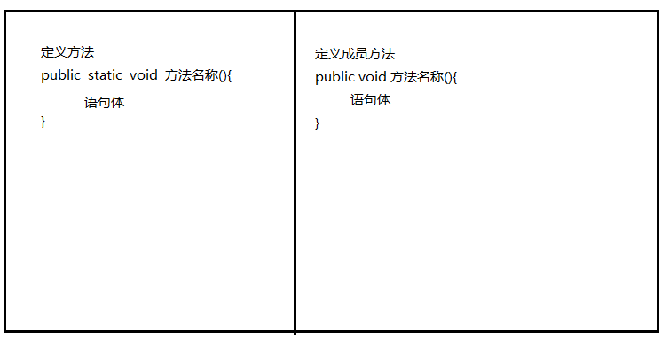
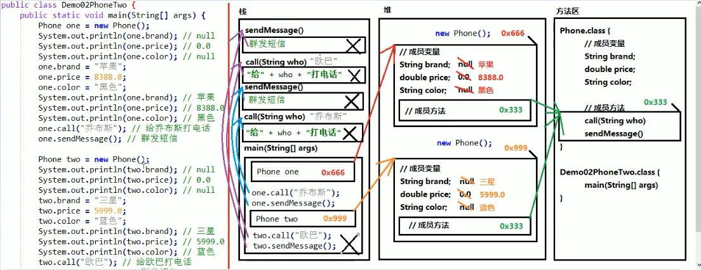
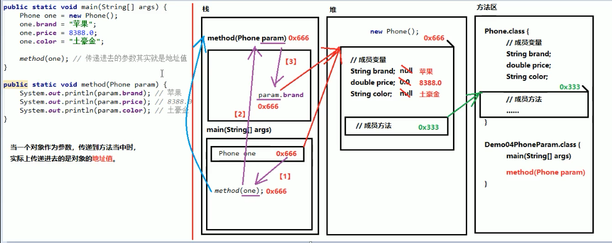

2019-10-18-21:35:36
面向对象
学面向对象前要先知道什么叫面向过程,了解了什么叫面向过程才容易理解面向对象
面向过程(强调步骤)
概念:当需要实现一个功能的时候,每一个具体的步骤都要亲历亲为,详细处理每一个细节的过程称为面向过程
如:把衣服脱下来==>找一个盆==>放点洗衣粉==>加点水==>浸泡==>洗衣服==>拧干==>晾晒
面向对象(强调对象)
概念:当需要实现一个功能的时候,不关系具体的步骤,而是找一个已经具有该功能的人来实现该过程.
如:把衣服脱下来==>放洗衣机里==>启动洗衣机==>晾晒
特点:面向对象思想是一种更符合我们思考习惯的思想,它可以把复杂的事情简单化,让我们从执行者变成指挥者
三大基本特征:封装、继承和多态
类
概念：是一组相关属性和行为的集合，可以看成是一类事物的模板，使用事物的属性特征和行为特征来描述该类事物
属性：事物的状态信息
行为：事物能够做什么
对象
概念：是一类事物的具体体现，对象是类的一个实例，必然具备该类事物的属性和行为
类和对象的关系
类是对一类事物的描述，是抽象的
对象是一类事物的实例，是具体的
类是对象的模板，对象是类的实体
类的定义格式
public class Person{
//成员变量（属性）
//成员方法（行为）
}
定义类
概念：就是定义类的成员，包括成员变量和成员方法
成员变量
概念：和定义变量几乎一样，只不过位置发生了变化，在类中，方法外
成员方法
概念：和定义方法几乎一样，只不过把static去掉

注意事项
1.成员变量是直接定义在类当中的，在方法外边
2.成员方法不要写static关键字
类的使用方法
通常情况下，一个类并不能直接使用，需要根据类创建一个对象， 才能使用。
1.导包:也就是指出需要使用的类，在什么位置.
import包名称.类名称;
对于和当前类属于同一个包的情况，可以省略导包语句不写。
2.创建，格式:
类名称对象名。new类名称();
Student stu = new Student();
3.使用，分为两种情况:
使用成员变量：对象名.成员变量名
使用成员方法：对象名.成员方法名(参数)
(也就是，想用谁，就用对象名点儿谁)
注意事项:
如果成员变量没有进行赋值，那么将会有一个默认值，规则和数组一样。
成员变量和局部变量的区别
1.定义的位置不一样【重点】
局部变量:在方法的内部
成员变量:在方法的外部，直接写在类当中
2.作用范围不一样【重点】
局部变量:只有方法当中才可以使用，出了方法就不能再用
成员变量:整个类全都可以通用。
3. 默认值不一样【重点】
局部变量:没有默认值，如果要想使用，必须手动进行赋值
成员变量:如果没有赋值，会有默认值，规则和数组一样
4.内存的位置不一样(了解)
局部变量，位于栈内存
成员变量:位于堆内存
5.生命周期不一样(了解)
局部变量，随着方法进栈而诞生，随着方法出栈而消失
成员变量:随着对象创建而诞生，随着对象被垃圾回收而消失
代码执行顺序

